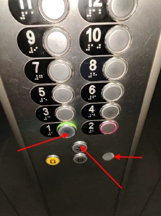
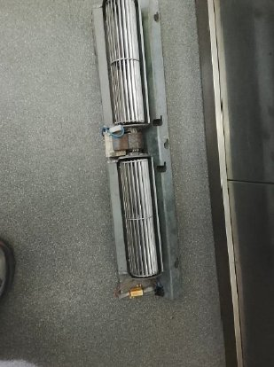
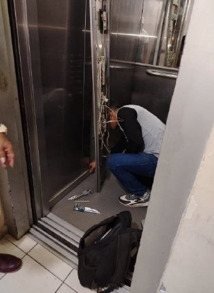
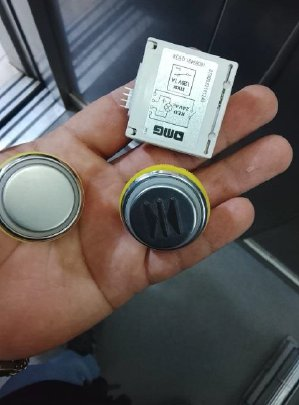
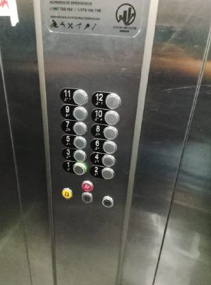
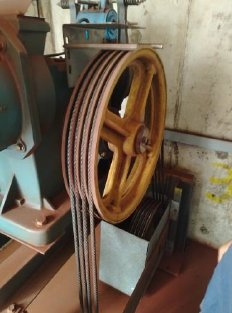
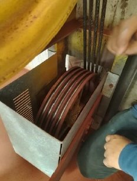

Reparaciones Correctivas Realizadas
Fallas identificadas y solucionadas durante la gestión 2026
Al iniciar la gestión, se identificaron 2 fallas correctivas en el ascensor que afectaban directamente su uso diario. Ambas fueron atendidas y resueltas en coordinación con la empresa técnica especializada.
🔴 Botones de Cierre y Piso N° 1
Los botones de cierre de puertas y el del piso N° 1 dejaron de funcionar, impidiendo el uso normal del ascensor. Se realizó el diagnóstico, reemplazo y prueba de ambos controles.
✔ Reparados🔴 Botón del Ventilador Interior
El botón de activación del ventilador de la cabina estaba malogrado, lo que impedía su funcionamiento y generaba calor en el interior. Fue reparado y verificado correctamente.
✔ Reparado⚠️ Estado inicial — Fallas encontradas

Botonera en mal estado Botonera en mal estado
Ventilador quemado Ventilador quemado🔧 Proceso de reparación

Técnico realizando reparación Técnico en reparación
Piezas reemplazadas (botones y módulo) Piezas reemplazadas✅ Resultado final — Funcionando correctamente

Botonera reparada y operativa ✅ Botonera operativaMantenimiento Preventivo Mensual
Programa activo para prevenir fallas y garantizar seguridad
El edificio cuenta con un contrato de mantenimiento preventivo mensual con empresa especializada. Este mantenimiento consiste principalmente en la limpieza y lubricación del sistema de rieles y motor del ascensor, inspeccionando cada componente para detectar desgastes antes de que se conviertan en fallas costosas, prolongando la vida útil del equipo y garantizando la seguridad de todos los residentes en sus 12 pisos de recorrido.
📸 Mantenimiento preventivo — Sistema de rieles y motor

Sistema de rieles y motor Rieles y motor
Lubricación y limpieza Lubricación completada| Componente | Actividad | Frecuencia | Estado |
|---|---|---|---|
| 🔩 Cables de tracción | Inspección visual y tensión | Mensual | ✔ OK |
| ⚙️ Motor y reductor | Lubricación y verificación | Mensual | ✔ OK |
| 🚪 Puertas y operadores | Ajuste, limpieza y lubricación | Mensual | ✔ OK |
| 🔘 Botoneras y sensores | Prueba funcional completa | Mensual | ✔ OK |
| 🛑 Frenos de seguridad | Inspección y prueba de parada | Mensual | ✔ OK |
| 💡 Iluminación cabina | Verificación y reemplazo si es necesario | Mensual | ✔ OK |
| 📞 Intercomunicador | Prueba de comunicación de emergencia | Mensual | ✔ OK |
| 🏗️ Foso y cuarto máquinas | Limpieza y revisión general | Mensual | ✔ OK |
Aviso previo al mantenimiento: La Junta Directiva comunicará con anticipación la fecha y hora del mantenimiento mensual para que todos los residentes puedan tomar sus precauciones y planificar el uso de las escaleras durante ese período.
¿Qué hacer si el ascensor no funciona?
Protocolo de emergencia y medidas de seguridad para residentes
Si quedas atrapado dentro del ascensor:
Mantén la calma. El ascensor tiene sistemas de seguridad que evitan caídas. Nunca intentes salir por tu cuenta. Usa el intercomunicador o tu celular para llamar ayuda.
Ante una falla del ascensor, es importante conocer el protocolo correcto para actuar con calma y seguridad, especialmente para nuestros vecinos adultos mayores y familias con niños.
Los ascensores modernos tienen frenos de seguridad automáticos. Una falla eléctrica no provoca caídas. El ascensor simplemente se detiene.
Todos los ascensores tienen un botón de alarma sonora. Presiónalo para alertar a otros residentes o al personal del edificio.
Comunícate con el vigilante del edificio o con un vecino. Ellos deben reportar de inmediato a la Junta Directiva.
El vigilante o cualquier residente que note el ascensor detenido debe notificar inmediatamente a la Junta para coordinar el servicio técnico.
Forzar las puertas puede causar accidentes graves. Espera siempre la asistencia técnica especializada.
Ante cualquier emergencia de incendio en el edificio, utiliza siempre las escaleras. Nunca el ascensor.
🏗️ Mientras el ascensor esté en mantenimiento o fuera de servicio: Usa las escaleras con calma. Si eres adulto mayor o tienes dificultad de movilidad, comunícate con un vecino o el vigilante para recibir ayuda. La Junta coordinará el servicio técnico a la brevedad posible.
Seguridad — Niños y uso responsable
Un mensaje importante para todas las familias del edificio
El ascensor es un equipo de uso exclusivamente utilitario, no un área de juegos. El mal uso genera desgaste acelerado, fallas costosas y puede poner en riesgo la vida de quienes lo usan. Como comunidad, es responsabilidad de todos cuidarlo.
Jugar con los botones
Presionar todos los pisos sin necesidad desgasta los circuitos y botoneras. Cada reparación tiene un costo que pagamos todos.
Saltar dentro del ascensor
Los saltos generan impactos en los sensores de nivel y pueden desactivar los frenos de seguridad, causando paradas de emergencia.
Sobrecargar con peso excesivo
Cada ascensor tiene una capacidad máxima. Superarla sobrecarga el motor, desgasta los cables y puede dejarlo fuera de servicio.
Bloquear las puertas
Sostener las puertas abiertas fuerza el mecanismo de cierre y daña los sensores de seguridad de la puerta.
Mascotas — Prohibido
Queda prohibido ingresar mascotas al ascensor. Además de ensuciar y contaminar el espacio, pueden dañar el mecanismo y chorrear agua o desechos que afectan a todos los residentes.
Objetos grandes sin precaución
Bicicletas, carritos o muebles deben transportarse con cuidado para no dañar las paredes, puertas o sensores del equipo.
Un mensaje para todas las familias
El ascensor de nuestro edificio es un bien de todos. Cada reparación innecesaria representa un gasto que sale del fondo común — el dinero de todos los propietarios. Enseñar a los niños a usarlo con responsabilidad es un acto de respeto hacia toda la comunidad. Juntos podemos mantenerlo en perfecto estado por muchos años más.
Situación Actual
Estado del ascensor al día de hoy
El ascensor se encuentra completamente operativo. Las 3 fallas correctivas fueron resueltas y el mantenimiento preventivo mensual está activo y al día. Todos los sistemas de seguridad funcionan correctamente.
Un ascensor seguro para toda la familia
La Junta Directiva mantiene el programa de mantenimiento mensual activo para garantizar que cada viaje en el ascensor sea seguro. Con el cuidado de todos y el pago puntual de las cuotas, mantenemos este servicio funcionando para todos.